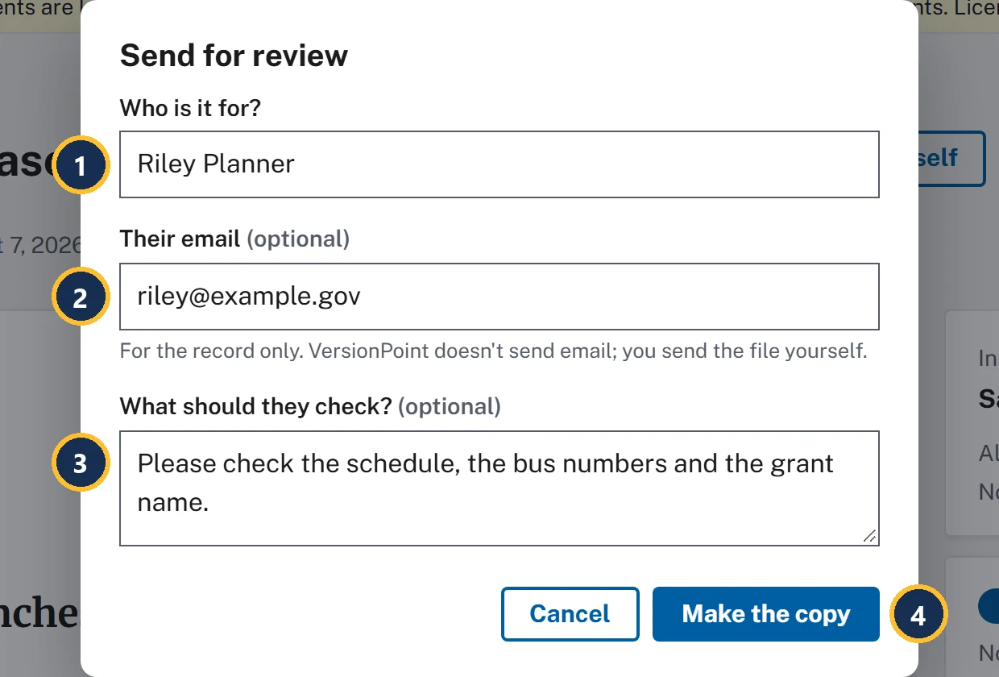
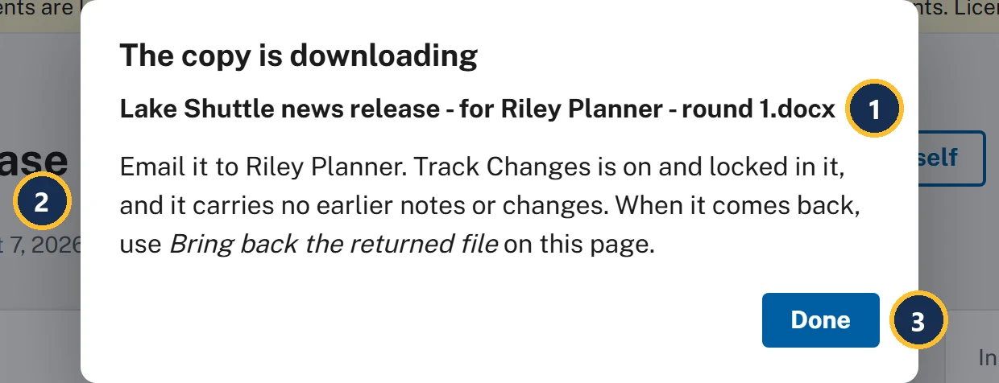
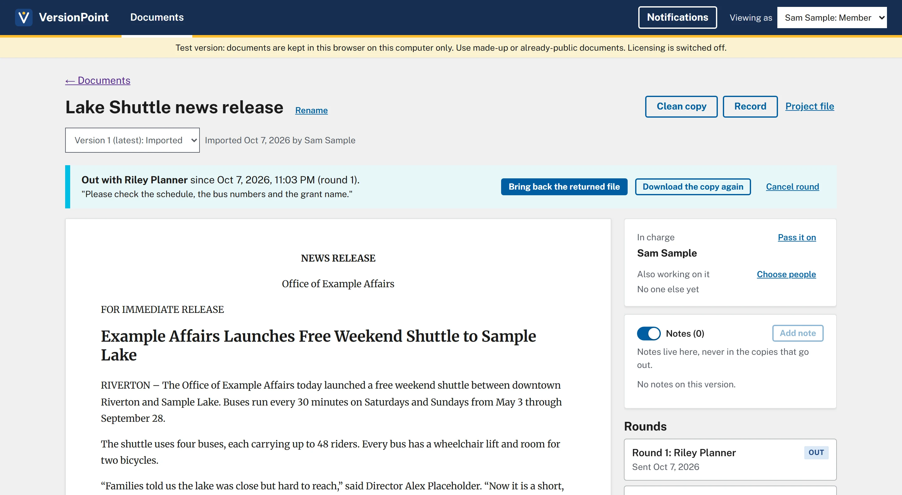

Lesson 26 minutesThe Lake Shuttle
Send a review copy
Make a review copy for one named reviewer, and know what it carries and what it leaves out.
Why it matters
Each review copy goes to one named person and carries a mark that ties it to this round. That is how VersionPoint knows whose edits came back, and why a file sent to the wrong person can't slip in.
Watch

- Who is it for? One person, by name. Their name goes in the record, on the copy's file name and on every edit that comes back.
- Their email (optional) is For the record only. VersionPoint doesn't send email; you send the file yourself.
- What should they check? (optional): what you're asking them to look at. It stays on the document page while the copy is out.
- Make the copy makes the copy and downloads it.

- The file name says what it is, who it's for and which round: Lake Shuttle news release - for Riley Planner - round 1.docx.
- What to do next: email it to Riley Planner yourself. Track Changes is on and locked in it, and it carries no earlier notes or changes.
- Done closes the form.
What the copy carries, and what it leaves out
| The copy carries | The copy leaves out |
|---|---|
| The latest version, with its letterhead, styles and layout | Every margin note, from reviewers or from VersionPoint |
| Track Changes, switched on and locked, so every edit Riley makes is tracked | Tracked changes from earlier rounds |
| A hidden copy mark that ties it to this document and round 1 | The author and last saved by names in the file's properties |
| A file name with the reviewer and the round | Anything about other reviewers or other rounds |
You never clean a review copy by hand. VersionPoint builds each one from the version, so the next reviewer sees the release and nothing else: not Riley's notes, not legal's questions, not the comments your office traded about it.
![The document page while round 1 is out. Callout 1 marks the blue banner: Out with Riley Planner since the date and time the copy was made (round 1), with the note Please check the schedule, the bus numbers and the grant name in quotes. Callouts 2, 3 and 4 mark the banner's buttons: Bring back the returned file, Download the copy again and Cancel round. Callout 5 marks the buttons at the top, now only Clean copy, Record and Project file. Callout 6 marks the new round under Rounds: Round 1: Riley Planner, tagged Out, Sent Oct 7, 2026.](assets/l2-out-a.webp)
- Out with Riley Planner, since when, and which round, with your note to them in quotes.
- Bring back the returned file: for when Riley sends it back (lesson 4).
- Download the copy again gives you the same copy, with the same mark, if it went astray.
- Cancel round ends the round. A copy that comes back after that can't be brought in.
- Send for review and Edit it yourself are gone while the copy is out. One copy is out at a time.
- Rounds now starts with Round 1: Riley Planner, tagged Out. On Documents, the release is tagged Out with Riley Planner.
Try it
- On the document page for Lake Shuttle news release, choose Send for review.
- Choose Make the copy with Who is it for? empty. Your browser asks you to fill in the field, and nothing is made.
- Type Riley Planner in Who is it for?, riley@example.gov in Their email, and Please check the schedule, the bus numbers and the grant name. in What should they check?.
- Choose Make the copy. The copy is downloading opens, and Lake Shuttle news release - for Riley Planner - round 1.docx downloads.
- Choose Done. The Out with Riley Planner banner shows your note in quotes.
- Choose Download the copy again. The same copy downloads again. Your browser may ask whether to allow a second download, or add a number to the file name; either is fine.
- Find the copy in your downloads folder and keep it. Lesson 3 uses it.
Check your work

Watch out for
Quick check
Pick an answer to see why it is or isn't right. Nothing is scored or sent anywhere.
Question 1
You want both the program office and legal to look at the draft this week. What does VersionPoint let you do?
Question 2
Riley says the copy never arrived. What do you do?
Question 3
Your director asks whether last week's comments from the front office could end up in the copy Riley gets. What do you tell them?
Lesson 3 looks at the copy from Riley's side, in Word.